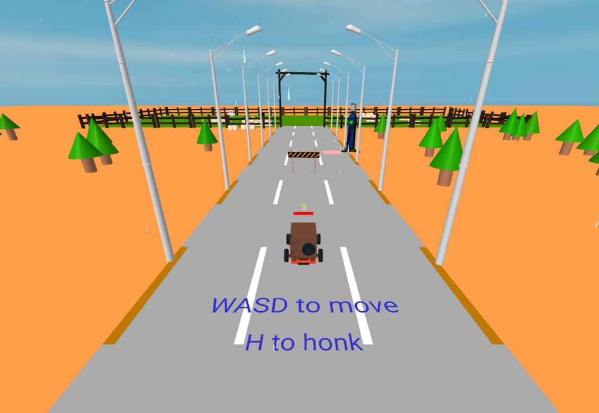

Play Game
Instructions
- Use the W, A, S, D keys to move the car forward, backward, left, and right.
- The objective is simply to wreck anything you can look at!
- With time, the car runs out of fuel and the gas pump can be used to refuel the car.
- The refueling cost is 2 coins, which can be collected by the car throughout the game.
- The game ends when the car runs out of fuel.
- Use H to honk.
- Feel free to explore the world, color the bricks, wreck as much as you can and enjoy the rain!

Documentation
Wreck Your Car, inspired by Bruno Simon's awward winning portfolio website, is a 3D Game based on a very small area. It is created using the Aframe Library ,added onto p5.js by Professor Craig Kapp's Aframe p5 Library. The physics of the game were added on with the Physics engine by the Physics for A-Frame VR Library. It is a small environment where the user controls a car using WASD with a camera fixed over the top of the car. The car can accelerate and move in different directions with limitations of a fuel tank. The fuel can be filled at the gas pump with the use of coins, which also can be collected by collisions with the coin in the game.
From the looks of it, it does seem decently simple, however most of the technical difficulties resulted from the latest version of the CDN Link for Physics for A-Frame VR not working at the time of development. This resuled in the previous version being incompatible with the 1.2.0 version of Aframe, thus we had to use the 0.8.0 version of Aframe as a settlement. After that, the integration of the Dynamic Bodies was fairly simple, however the other add-ons did not directly support the functionalities of Static Bodies since things had changed with the updates, therefore Aframe Extras was also used with a version compatible with the others.
As the first step in development, we started off with placing a primitive, retricting user movement through the camera and mouse. Then we built it further by allowing the user to roam around with the help of 'WASD' keys. Then, we placed some random objects and game them the 'Dynamic-Body' entity, allowing them to be collidable with each other. In order to make them collidable with the user controlled primitive, we added the 'static-Body' entity to the user controlled primitive, allowing it to perform collisions with the other objects that had a 'dynamic-Body' entity associated with them. We further moved on, read the documentation and added 'gravity' and 'restitution' into the environment, allowing for objects to fall off.
Once the basic physics were accomplished, we went forth and added various 3D Models, downloaded from the internet. The placements of these objects was a decently time consuming task, especially to make them aligned alongside the 'road' which itself was laid over the road. Furthermore, the placement for fenses was curated and almost all of the objects, wherever suitable, were given the entity of 'dyanimic-Body' in order to make them collidable with the user.
We then replaced the 'user controlled primitive' with a 3D modelled truck. A further challenge was to ensure the car could rotate, but only move in the direction it is rotated ahead (i.e only move forward in its direction). This was accomplished by brain storming basic physics vectors. The rotation of the car was mapped over a range of a number. i.e if the car was parked at 30 Degrees from the center, the value was mapped to be ~0.267. This value was then used as the directional vector in which the car was parked, and the total speed of the car, i.e 0.08, was subtracted from this value, making it 0.533, forming the vector for movement in the forward direction. This allowed the car to move at an angle, the same at which it was parked.
Moving on, we tried implementing the solidity of objects using the RayCaster functionality, however with the user controlled car as our 'player', it became very difficult to implement, and instead we tried making the 'trees', 'poles', and the 'gas pump' solid with the help of 'static-Body' entity using the Physics Engine. However, we believe, due to the incompatibility of the libraries, it did not work as it was supposed to. Therefore, with a decent amount of research, we understood on how make the user controlled car to be the focus of the physics by assigning it the primitive of 'kinematic-Body', which allowed us for the car to not just pass 'through' the mentioned objects, and instead it forcefully passed 'around' them.
As a next step, the gas pump's functionality was added. This was done by using the text entity, which was positioned just above the car (replicating the car's movement for it) and reducing the width of it overtime, and then not allowing the movement of the car after the threshold was reached.
Finally, some coins were placed which the user could collect over time. They would disapper after a certain amount of time, and collecting them increases the count of coins collected over the user's car, positioned in the same manner as the fuel bar.
Lastly, the only problem that was not encountered was the requirement for the game to load a couple of times before it properly loaded up without breaking. We could not find a solution for this, and believe this was particularly due to quite an old version of Aframe used.